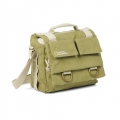

无忌
器材库
全部器材
产品年表
名词百科
榜单
器材库
> 摄影包 > NG 2346

国家地理
NG 2346
分类
摄影包
点评
0 条
图片
7 张
评测
2 篇
地球探索者NG 2346是一款适合日常携带的多功能中型单肩包，可放置你需要的所有器材和一台平板电脑、相机或摄像机。备有拉杆箱固定带。
产品类型
摄影包
综合评分
暂无评分
无忌评测
小巧轻便 国家地理NG2346单肩包试用报告
规格参数
网友点评
(0)
产品图 / 样片
(7)
评测文章
(2)
详细规格
产品类型
单肩挎包
发布日期
2011-10-17
厂家推荐价格
11,130.00 （日元）
容量
可容纳一部搭载了镜头的数码单反相机、1个备用镜头、配件和个人物品，及一台平板电脑
外部尺寸
28×16×25cm
内部尺寸
26×12.5×21cm
重量
800g
该产品暂无存档的网友点评
产品图 / 样片
NG 2346
评测 / 相关文章
小巧轻便 国家地理NG2346单肩包试用报告
（存档）
［试用］城市穿梭者的利器：国家地理NG5160评测
（存档）
相关文章
［试用］小巧轻便 国家地理NG2346单肩包试用报告
（存档）
［试用］城市穿梭者的利器：国家地理NG5160评测
（存档）